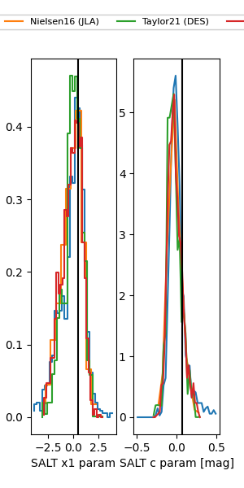

FINK: ZTF25abmqxsb
Lasair: ZTF25abmqxsb
ALeRCE: ZTF25abmqxsb
TNS: 2025wqv
YSE: 2025wqv
ZTF25abmqxsb (ztf,fink)
2025wqv (tns,yse)
equatorial (ra, dec) = (298.6996,+3.00233)
galactic (l, b) = (43.0191,-12.63322)

last ztfg=19.81, ztfr=19.70
4 ztfg, 6 ztfr detections